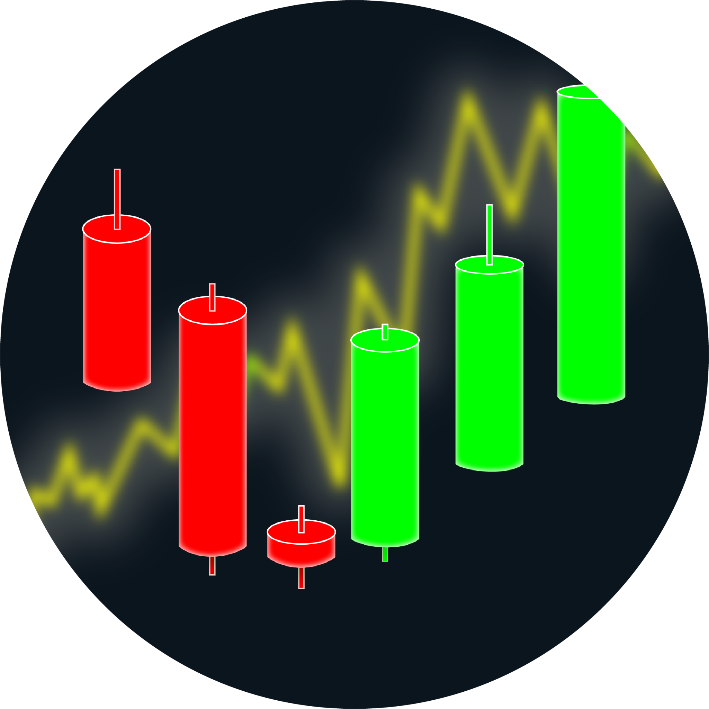

TradeSizer — Калькулятор позиції та стоп-лосса
Додаток для розрахунку розміру позиції та стоп-лосса на основі ATR. Містить аналіз волатильності за NATR.
- Ручне введення ATR, ціни активу, ризику та множника
- Автоматичний розрахунок позиції та стоп-лосса
- Індикатор волатильності на основі NATR (з налаштуванням порогів)
Що ми тестуємо
- Встановлення та оновлення через Google Play
- Базовий функціонал
- Інтеграцію реклами та оплати (ще не активні)
Як допомогти
- Перейти за посиланням та встановити додаток
- Не видаляти його протягом 14 днів
- Достатньо спробувати 3–5 разів — це вже допоможе
Приєднатися до тестування